El único bloque que no necesita datos: sirve para planear el ensayo antes de sembrar. El Bloque 8 sortea los tratamientos de diez diseños con una semilla que hace el sorteo reproducible, dibuja el croquis de campo con los números de parcela, calcula los grados de libertad del análisis, genera la libreta de campo lista para capturar y responde la pregunta que conviene hacerse primero: cuántas repeticiones hacen falta para detectar la diferencia que importa.
Los Bloques 2 a 7 analizan un ensayo terminado; el Bloque 8 prepara el siguiente. Está disponible desde que se abre la app, sin cargar ninguna tabla, y su resultado (la libreta de campo) vuelve al Bloque 2 cuando las mediciones están capturadas. Así se cierra el ciclo de la figura 1.6.
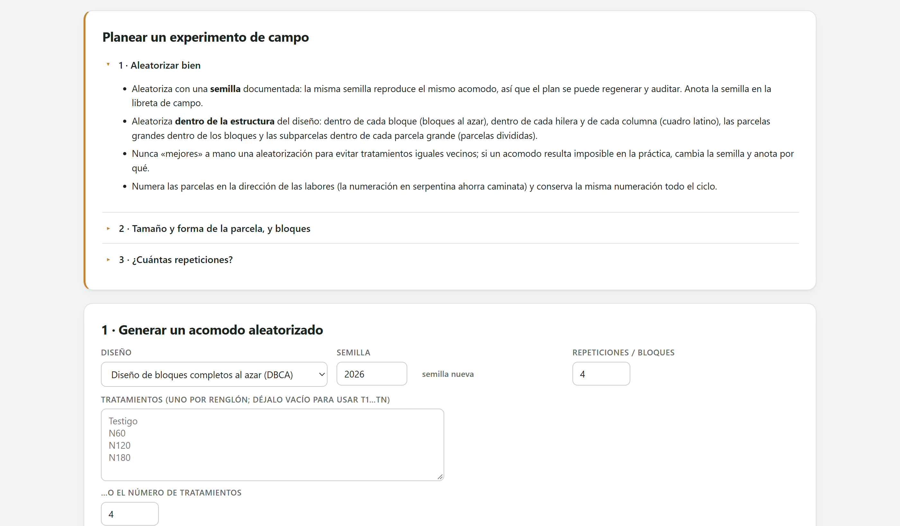
Todo lo que el análisis puede hacer después depende de cuatro decisiones previas. El diseño, que se elige por cómo es el terreno y cómo se aplican los tratamientos (sección 2.4). El número de repeticiones, que se calcula con el CV esperado y la diferencia que interesa detectar (sección 9.5). La parcela: alargada en la dirección del gradiente de fertilidad, con surcos de borde que no se cosechan, y los bloques cruzados al gradiente para que cada bloque sea uniforme por dentro. El sorteo, que se hace dentro de la estructura del diseño y se documenta con su semilla. Un error en cualquiera de ellas no se corrige en la computadora.
| Aspecto | Recomendación |
|---|---|
| Forma | Parcelas largas y angostas orientadas a lo largo del gradiente; bloques acomodados a lo ancho del gradiente. |
| Área de cosecha | Descartar surcos de borde y cabeceras: por ejemplo, cosechar los 2 surcos centrales × 4 m de una parcela de 4 surcos × 5 m. |
| Tamaño típico | 10 a 30 m² para cereales, 20 a 50 m² para maíz; en macetas, una o pocas plantas por maceta y más repeticiones. |
| Protección | Surcos de guarda alrededor del ensayo y calles entre bloques para evitar interferencias: deriva de fertilizante, sombreo, acame. |
La tarjeta 1 · Generar un acomodo aleatorizado pide el diseño, la semilla y lo que ese diseño necesita: tratamientos, niveles de factores, repeticiones o testigos. Los campos que no aplican al diseño elegido se ocultan solos.
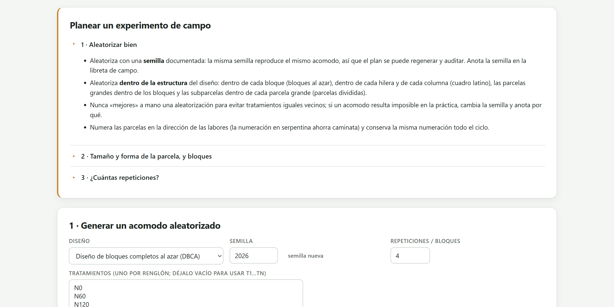
1 2 3 4 5 6| Diseño en la app | Datos que pide | Cómo se sortea |
|---|---|---|
| Diseño completamente al azar | Tratamientos, repeticiones | Todas las parcelas se barajan juntas y se acomodan en un rectángulo. |
| DISEÑO DE BLOQUES COMPLETOS AL AZAR | Tratamientos, bloques | Un sorteo independiente dentro de cada bloque. |
| Cuadro latino | Tratamientos | Se construye un cuadrado cíclico y se barajan filas, columnas y la asignación de letras. Las repeticiones son tantas como tratamientos. |
| Factorial (A × B [× C]) completamente al azar · en bloques al azar | Niveles de A, B y, opcionalmente, C; repeticiones | Las combinaciones se tratan como tratamientos y se sortean como en azar completo o en bloques. |
| Parcelas divididas en bloques al azar | Niveles de A (parcela grande) y B (subparcela), bloques | Se sortea A dentro de cada bloque y B dentro de cada parcela grande, cada vez con un sorteo nuevo. |
| Franjas divididas en bloques al azar | Niveles de A y B, bloques | A en franjas horizontales y B en franjas verticales, con un sorteo por bloque para cada dirección. |
| Parcelas subdivididas en bloques al azar | Niveles de A, B y C, bloques | A en parcelas grandes, B en subparcelas y C en sub-subparcelas, cada nivel sorteado dentro del anterior. |
| Bloques incompletos resolubles | Tratamientos, repeticiones, tamaño de bloque k | Cada repetición se baraja y se corta en bloques de k parcelas. El número de tratamientos debe ser múltiplo de k. |
| Diseño aumentado | Testigos, entradas nuevas, bloques | Las entradas se reparten entre los bloques; cada bloque recibe todos los testigos y se baraja. |
Una computadora no sortea de verdad: genera una secuencia de números que parece aleatoria a partir de un número inicial, la semilla. La misma semilla produce siempre la misma secuencia y, por tanto, el mismo croquis. Eso tiene dos ventajas. El plan se puede regenerar si se pierde la hoja, y un revisor o un colega puede comprobar que el acomodo salió de un sorteo y no de una elección a mano. La semilla se escribe en el protocolo y en la libreta de campo, que la app incluye en la hoja Info del archivo de Excel.
| Si el croquis… | entonces… |
|---|---|
| tiene dos parcelas vecinas con el mismo tratamiento | Déjalo: es parte del azar. «Mejorar» un sorteo a mano lo invalida. |
| es imposible en el terreno (un riego que no llega, maquinaria que no cabe) | Cambia la semilla y anota en el protocolo la razón y la semilla descartada. |
| debe repetirse en otra localidad | Usa una semilla distinta en cada localidad y anótalas todas. |
La semilla nunca se elige probando hasta que el croquis «se vea bien»: eso es elegir el acomodo, no sortearlo.
El desplegable Opciones de acomodo, numeración y libreta de campo controla la geometría del croquis, la forma de numerar las parcelas y los nombres de las columnas de la libreta.
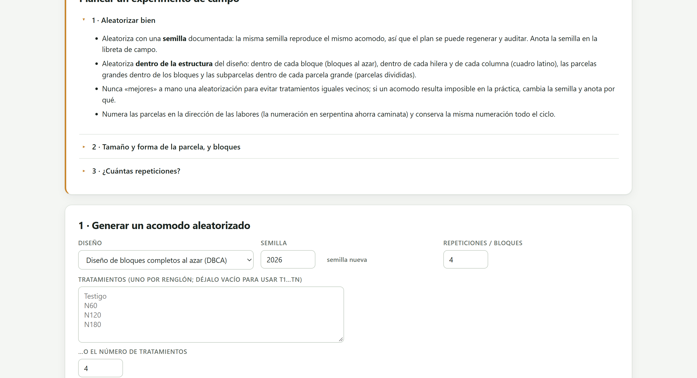
Yield_t_ha.| Opción | Qué hace |
|---|---|
| Parcelas por renglón dentro de un bloque | Parte cada bloque en renglones de ese número de parcelas; 0 pone todo el bloque en un renglón. |
| Acomodo de los bloques · Bloques por renglón | Bloques uno debajo del otro, o lado a lado con cierto número de bloques por renglón. |
| Pasillo entre bloques | Deja un renglón o columna vacía entre bloques, que representa una calle. |
| Numeración de las parcelas | Consecutiva (1, 2, 3…) o por bloque (101, 102… 201, 202…). |
| Serpentina | Numera en zigzag: de izquierda a derecha en un renglón y de derecha a izquierda en el siguiente. Ahorra caminar al capturar y cosechar. |
| Ancho de la parcela · Largo de la parcela | Dimensiones de la parcela en metros, para calcular el área del ensayo. |
| Nombre de la columna:… | Los nombres de las columnas de bloque, factores y tratamiento en la libreta. |
| Columnas de respuesta que se agregan | Las columnas vacías de respuesta, separadas por comas: Yield_t_ha, Height_cm. |
Si las columnas se llaman Block, Row y Column, el Bloque 2 las reconoce solas al cargar la libreta. Si la respuesta lleva unidades en el nombre (Yield_t_ha), las figuras y el informe las heredan. Vale la pena decidir los nombres aquí, antes de que el equipo de campo empiece a capturar.
Al pulsar Generar el acomodo y la libreta de campo aparece la tarjeta 2 · Acomodo con seis tarjetas de resumen, el croquis y el esqueleto del ANOVA.
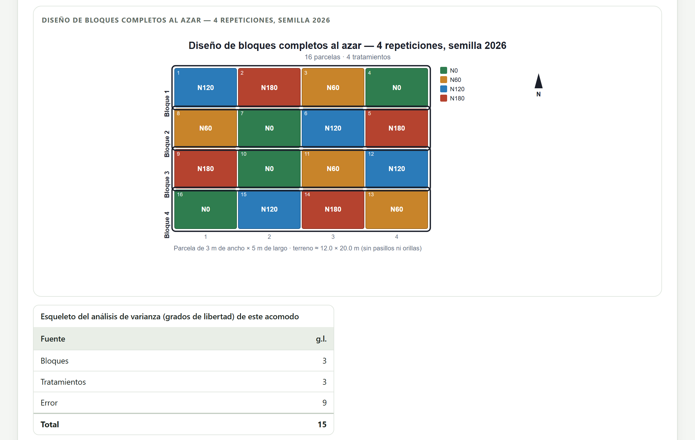
| Tarjeta | Qué dice |
|---|---|
| Parcelas | Número de parcelas y tamaño de la rejilla. |
| Tratamientos | Número de tratamientos (en el aumentado, testigos más entradas). |
| Repeticiones / bloques | Repeticiones; en el cuadro latino, igual al número de tratamientos. |
| Superficie | Superficie de las parcelas en hectáreas y dimensiones del rectángulo, sin bordes. |
| g.l. del error | Grados de libertad del primer error del diseño; en ámbar si son menos de 10. |
| Semilla | La semilla usada, para anotarla. |
| Diseño | Fuentes y grados de libertad |
|---|---|
| Bloques completos, 4 tratamientos, 4 bloques | Bloques 3 · Tratamientos 3 · Error 9 · Total 15 |
| Cuadro latino de 5 × 5 | Filas 4 · Columnas 4 · Tratamientos 4 · Error 12 · Total 24 |
| Parcelas divididas, 2 × 4, 3 bloques | Bloques 2 · A 1 · Error a 2 · B 3 · A × B 3 · Error b 12 · Total 23 |
| Bloques incompletos, 9 tratamientos, k = 3, 3 repeticiones | Repeticiones 2 · Bloques dentro de repeticiones 6 · Tratamientos 8 · Error intrabloque 10 · Total 26 |
| Aumentado, 2 testigos, 12 entradas, 4 bloques | Bloques 3 · Testigos 1 · Error (de los testigos) 3 |
El esqueleto del ANOVA dice, antes de gastar una semilla, si el ensayo tendrá con qué juzgar las diferencias. Un bloques completos de 4 × 4 deja 9 grados de libertad al error, por debajo de los 10 a 12 recomendados. En la parcela dividida de 2 riegos × 4 variedades con 3 bloques, el riego se probará con apenas 2 grados de libertad (error a), aunque las variedades tengan 12: con 2 riegos, conviene más repeticiones o aceptar que la comparación de riegos será poco sensible. La tarjeta g.l. del error marca en ámbar ese primer error.
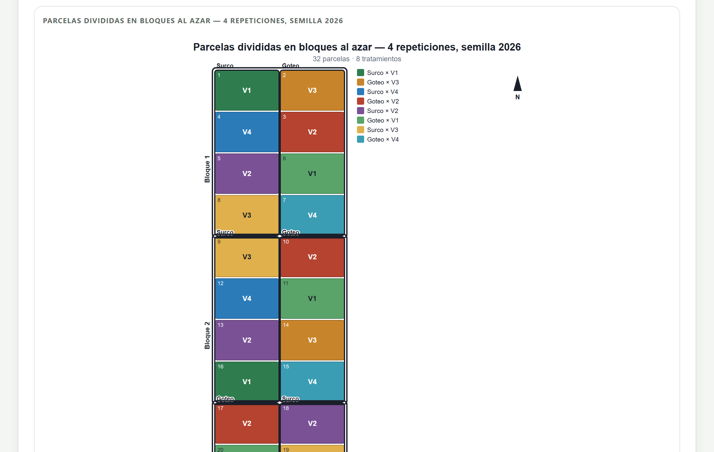
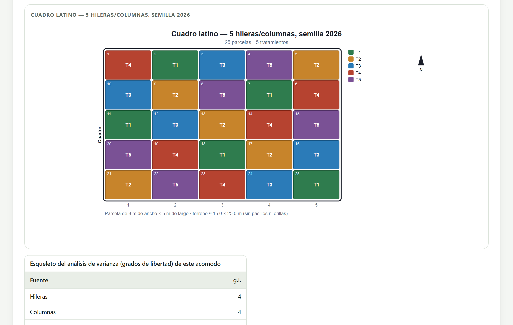
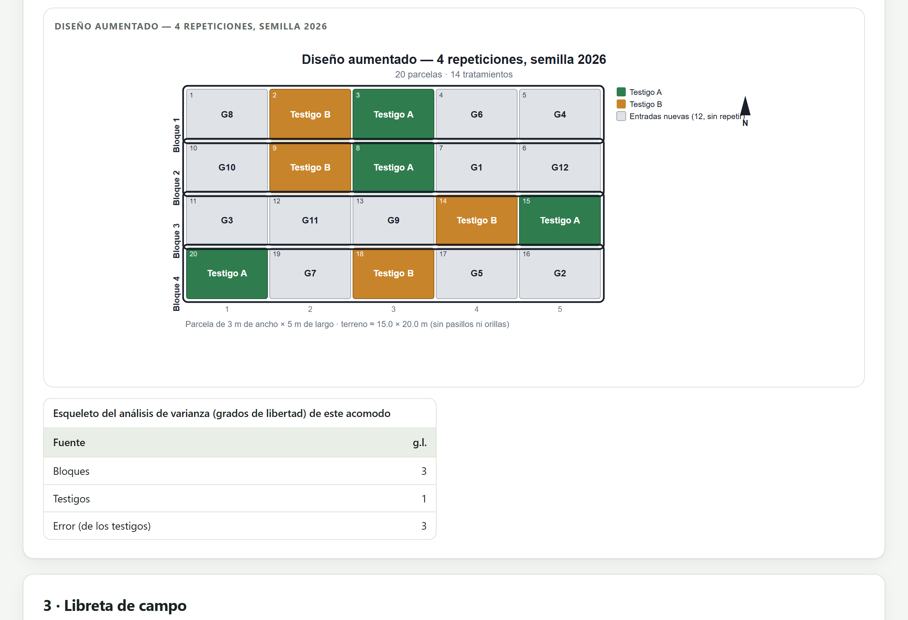
El croquis se edita y exporta como cualquier figura de la app (capítulo 7). Su editor permite elegir qué texto lleva cada parcela (el nivel, el tratamiento completo o nada), mostrar u ocultar los números, los contornos de bloques y de parcelas grandes, la leyenda, las dimensiones y la flecha del norte, y ajustar el espacio entre parcelas. Exportado en SVG o en PNG de alta resolución, se imprime para llevarlo al campo.
La tarjeta 3 · Libreta de campo contiene una fila por parcela, en orden de número, con las columnas de respuesta vacías. Es exactamente la tabla larga que el Bloque 2 lee, así que la captura de campo va directo al análisis.
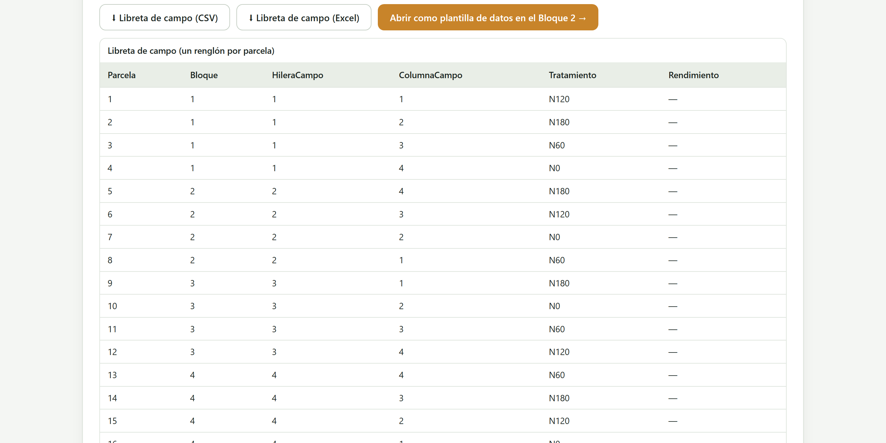
Yield_t_ha. Las parcelas 5 a 8 recorren el renglón 2 de derecha a izquierda por la numeración en zigzag.| Columna | Aparece en… |
|---|---|
Plot | Todos los diseños. |
Block (o el nombre elegido) | Diseños con bloques o repeticiones. |
IncBlock | Bloques incompletos: el bloque dentro de la repetición. |
Row · Column | Cuadro latino: fila y columna del diseño. |
FieldRow · FieldCol | Los demás diseños: posición de la parcela en la rejilla del croquis. |
A · B · C | Factoriales, parcelas divididas y franjas. |
Treatment | Todos: el tratamiento o la combinación. |
Type | Aumentado: check o entry. |
| Respuestas | Las columnas escritas en Columnas de respuesta que se agregan, vacías. |
| Botón | Qué hace |
|---|---|
| Libreta de campo (CSV) | Descarga la libreta en texto separado por comas. |
| Libreta de campo (Excel) | Descarga un libro con dos hojas: la libreta y Info, con el diseño, la semilla, las repeticiones y la fecha. |
| Abrir como plantilla de datos en el Bloque 2 | Carga la libreta en el Bloque 2 sin descargarla, para comprobar que su estructura es la que se analizará. |
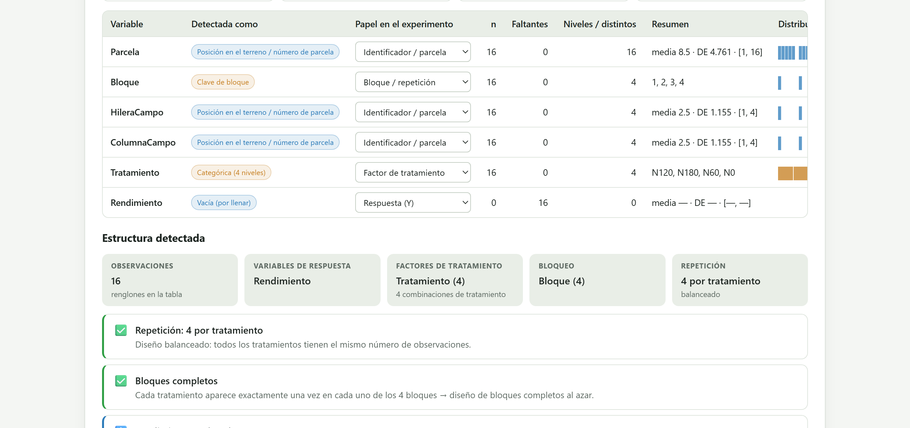
Block como bloque, Treatment como factor y Yield_t_ha como respuesta vacía. La estructura detectada ya es la de un bloques completos al azar balanceado; solo falta capturar el rendimiento.La tarjeta 4 · Repeticiones y potencia responde dos preguntas complementarias: cuántas repeticiones hacen falta para detectar una diferencia dada, y qué diferencia se puede detectar con las repeticiones que se pueden pagar. Se recalcula al cambiar cualquier dato.
La potencia es la probabilidad de que el ensayo declare significativa una diferencia que de verdad existe. Depende de tres cosas: la diferencia que se quiere detectar, expresada como porcentaje de la media; la variabilidad del ensayo, medida por el CV; y las repeticiones. La app calcula la potencia de la comparación entre dos medias de tratamiento con una prueba t que usa los grados de libertad del error del diseño. El número de repeticiones necesario sale de r ≥ 2 (tα/2 + tβ)² (CV / d)², resuelto por tanteo porque los valores de t dependen de los grados de libertad. De la fórmula se desprende la regla más útil del bloque: bajar el CV a la mitad equivale a multiplicar las repeticiones por cuatro.
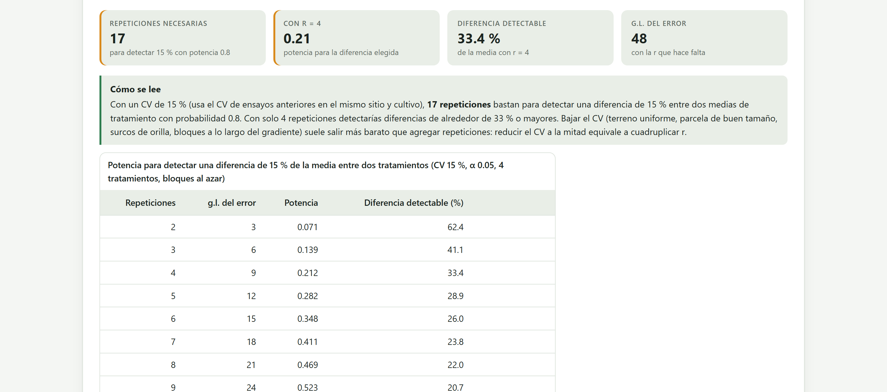
| Campo | Qué poner |
|---|---|
| CV esperado (%) | El CV del ANOVA de ensayos anteriores en el mismo sitio y cultivo; el Bloque 5 lo reporta. |
| Diferencia que se quiere detectar (% de la media) | La diferencia más pequeña que tendría importancia agronómica o económica. |
| α · Potencia buscada | Nivel de significancia (0.05) y potencia buscada (0.80 es lo habitual; 0.90 para ensayos caros o decisiones importantes). |
| Número de tratamientos · Diseño | Determinan los grados de libertad del error: (t − 1)(r − 1) en bloques, t(r − 1) en azar completo. |
| Repeticiones que puedes costear | Las repeticiones que el presupuesto o el terreno permiten, para ver su potencia y su diferencia detectable. |
| CV del ensayo | Diferencia del 10 % | Diferencia del 15 % | Diferencia del 20 % |
|---|---|---|---|
| 5 % | 5 | — | — |
| 8 % | — | 6 | — |
| 10 % | 17 | 8 | — |
| 15 % | 36 | 17 | — |
| 20 % | — | — | 17 |
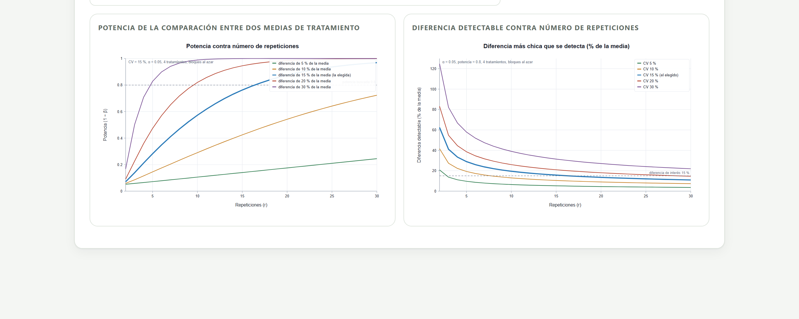
| Si las repeticiones necesarias… | entonces… |
|---|---|
| caben en el terreno y el presupuesto | Siembra al menos esas, y verifica que el esqueleto del ANOVA deje 10 a 12 grados de libertad al error. |
| son el doble de las posibles | Trabaja sobre el CV (parcelas, bordes, bloques) o reduce el número de tratamientos: menos tratamientos mejor probados valen más que muchos mal probados. |
| son muchas más de las posibles | Acepta una diferencia detectable mayor y declárala en el protocolo, o replantea el ensayo en varias localidades o ciclos. |
| no se pueden calcular (más de 200) | La diferencia de interés es demasiado pequeña para ese CV; no tiene sentido sembrar ese ensayo así. |
Un ensayo sin potencia suficiente no es un ahorro: si no encuentra diferencias, no se sabe si no las hay o si no podía verlas.
La calculadora responde por la comparación entre dos tratamientos con una prueba t, que es la pregunta práctica de la mayoría de los ensayos. Las pruebas de separación de medias que controlan el error de la familia (Tukey, Bonferroni) son más exigentes, así que con ellas conviene sumar una o dos repeticiones a lo que indica la calculadora, sobre todo con muchos tratamientos.
Yield_t_ha como respuesta.Un buen ensayo se decide antes de sembrar: el diseño por el terreno, las repeticiones por el CV y la diferencia que importa, y el acomodo por un sorteo documentado con su semilla. El croquis y el esqueleto del ANOVA muestran de antemano si el análisis tendrá con qué trabajar, y la libreta de campo garantiza que los datos lleguen al Bloque 2 en el formato correcto.
Con este capítulo se completa el recorrido por los ocho bloques. Los apéndices reúnen, para consulta rápida, los formatos de archivo, las reglas de decisión de todo el manual, un glosario inglés–español y la solución de los problemas más frecuentes.